Reisprogramma
Bekijk hier het gedetailleerde reisprogramma voor onze zomerreis naar het westen van de Verenigde Staten.
Dag 1 (07/09/2024): Las Vegas
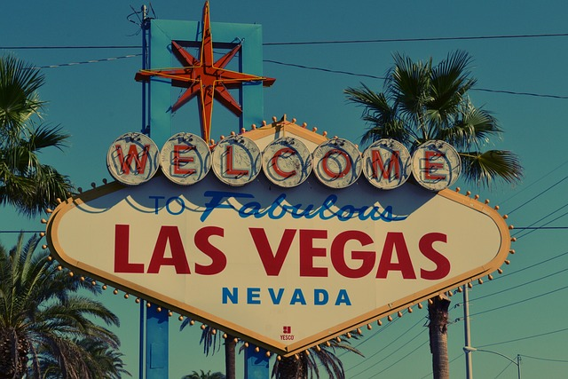Welcome to fabulous Las Vegas! Nadat we landen op de luchthaven, gaan we naar ons eerste hotel. We frissen ons even op en wandelen, zodra het donker wordt, over "The Strip", de met neon verlichte boulevard waar we alle prestigieuze hotels en casino's kunnen bewonderen.
Dag 2 (08/09/2024): Las Vegas - Death Vally NP
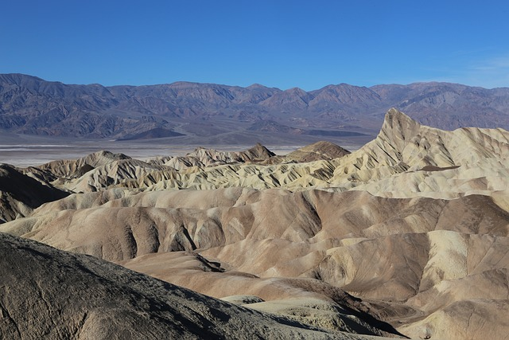We genieten van de faciliteiten van ons hotel, de uitgebreide buffetten en de shoppingmogelijkheden van Las Vegas voordat we afzakken naar Death Valley. We zullen zeker onder de indruk zijn van dit desolate, droge landschap. Hoogtepunten zijn de kleurrijke berglandschappen van Zabriskie Point en Artist's Pallete, de zoutvlaktes van Badwater en de zanderige Mesquite Flat Sand Dunes.
Dag 3 (09/09/2024): Death Valley NP - Mammoth Lakes
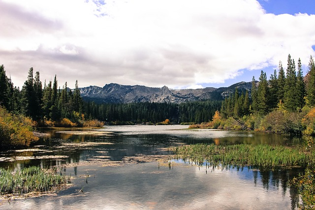Na een spannende klim en via een fantastische route verlaten we Death Valley en rijden we richting Lone Pine. Hier wandelen we op de Mobius Arch Trail met een adembenemend zicht op de oostelijke flanken van de Sierra Nevada. In de namiddag bereiken we de verkoelende hoogtes van Mammoth Lakes. We maken gebruik van de gondels en de skiliften om de mooie natuur rond dit skioord te ontdekken.
Dag 4 (10/09/2024): Mammoth Lakes - Yosemite NP
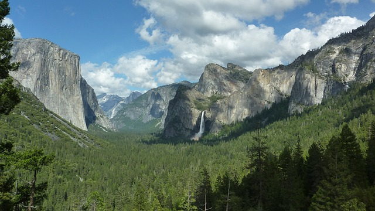Voordat we de Tioga Pass oprijden, maken we een stop bij Mono Lake, een van de oudste meren ter wereld, en ontdekken de vreemd gevormde kalksteenformaties aan de oever. De Tioga Pass brengt ons naar het hart van Yosemite National Park. Onderweg strekken we de benen tijdens een wandeling over de John Muir Trail naar Cathedral Lakes, gaan picknicken aan Tenaya Lake en klauteren over gigantische granietrotsen nabij Olmsted Point.
Dag 5 (11/09/2024): Yosemite NP
We laten ons volledig inpakken door Yosemite National Park. We verkennen de Yosemite Valley met zijn indrukwekkende watervallen en gigantische rotswanden. Wandelaars onder ons kunnen de magnifieke Mist Trail naar de Vernal en Nevada Falls trotseren. Wie het rustig aan wil doen, zal zeker genieten van het spectaculaire uitzicht op Half Dome vanaf Glacier Point en de wandeling tussen eeuwenoude sequoia’s in de Mariposa Grove.
Dag 6 (12/09/2024): Yosemite NP - San Francisco
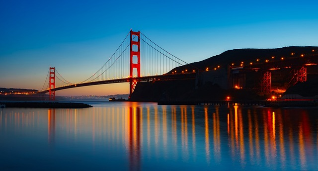Vandaag rijden we verder naar een van de meest geliefde steden van Noord-Amerika: San Francisco. Voordat we naar ons hotel gaan, brengen we een bezoek aan de bekende Victoriaanse huisjes op Alamo Square, het geweldige uitzichtpunt Twin Peaks, de flower power-wijk Haight Ashbury en het immense Golden Gate Park.
Dag 7 (13/09/2024): San Francisco
San Francisco, vaak gehuld in een wazige mist, heeft talrijke bezienswaardigheden: de iconische Golden Gate Bridge, het gezellige Fisherman’s Wharf, het kleurrijke Chinatown, het shoppingdistrict rond Union Square, de beruchte gevangenis Alcatraz. We maken zeker ook een ritje met een van de wereldberoemde kabeltrammetjes. De City by the Bay zal ons niet snel vervelen.
Dag 8 (14/09/2024): San Francisco - Monterey
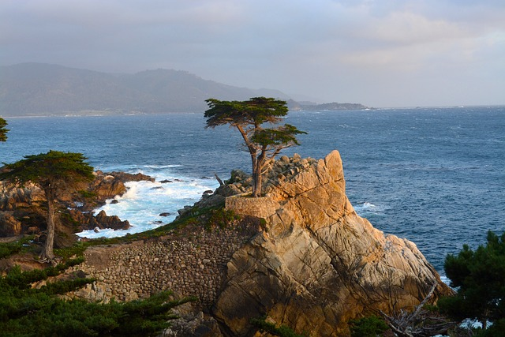We rijden via de Pacific Coast Highway richting Monterey. Dit stadje, ooit het centrum van de visserij, staat nu bekend om zijn gezellige winkeltjes, koffiehuizen en visrestaurants. De kuststrook tussen Monterey en Carmel is adembenemend. We nemen de panoramische 17-Mile Drive (tolweg) langs Pacific Grove en Pebble Beach. Deze kustweg, bekend door de films van Hitchcock, slingert zich langs prachtige duinen, fotogenieke cipressen, exclusieve golfterreinen en oude Victoriaanse villa’s. We brengen ook een bezoek aan het charmante Carmel-by-the-Sea met zijn romantische strand.
Dag 9 (15/09/2024): Monterey - Central Coast
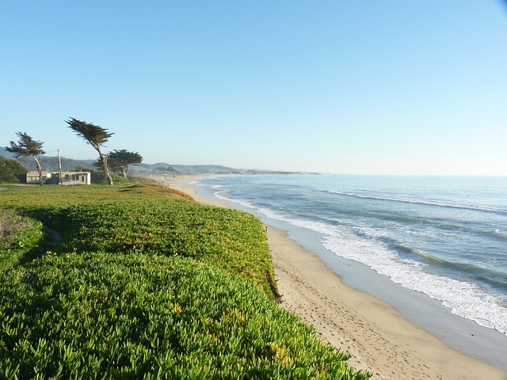We genieten van de rit langs een van de mooiste kustlijnen ter wereld. We verkennen de staatsparken van de Big Sur regio, waar de oceaan haar golven met volle kracht tegen de ruwe kusten zweept, waar redwoods als kathedralen de heuvels beplanten en waar stranden als sprookjesdecors tentoongesteld staan. We sluiten de dag af op een van de uitgestrekte stranden.
Dag 10 (16/09/2024): Central Coast - Los Angeles

Onderweg naar Los Angeles houden we halt in Santa Barbara. De locatie van deze stad, tussen de bergen en de oceaan, én de mooie Spaanse architectuur, maken een bezoek aan deze stad zeker de moeite waard. Vervolgens kiezen we voor de kustroute langs het exclusieve Malibu en ontdekken het hippe Venice Beach en het mondaine Santa Monica met zijn vele winkels, breed zandstrand en gezellige pier.
Dag 11 (17/09/2024): Los Angeles
Los Angeles, de filmhoofdstad van de wereld! We hebben een volledige dag om de stad te verkennen. Wie weet lopen we wel een bekende ster tegen het lijf? Hoogtepunten zijn onder andere Beverly Hills, Rodeo Drive, Hollywood, Griffith Observatory en Los Angeles Downtown. Het heerlijke Californische weer aan Santa Monica Beach nodigt uit voor een fietstocht langs de stranden naar Venice. Wie van pretparken houdt, kan zich uitleven in Universal Studios Hollywood.
Dag 12 (18/09/2024): Los Angeles - Palm Springs
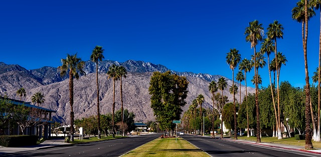We ruilen het gigantische Los Angeles voor het rustige Palm Springs. Dit stadje, midden in de woestijn, is het toevluchtsoord voor vele superrijke Amerikanen. Dit zien we aan de luxueuze huizen, meer dan 80 golfbanen, chique winkels en dure restaurants. We nemen de kabelbaan naar de top van Mount San Jacinto voor een prachtig uitzicht over de stad en een mooie wandeling.
Dag 13 (19/09/2024): Palm Springs - Phoenix/Scottsdale
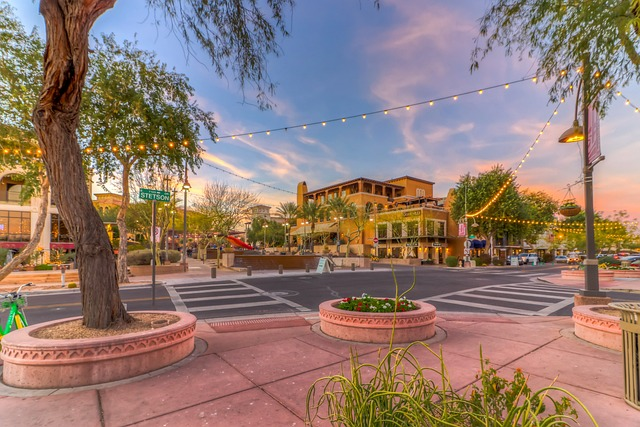Het glorieuze Phoenix schittert als een gigantische oase in het brandende zonlicht van de Sonora-woestijn. We dompelen ons onder in de luxe van de stad of laten de hitte ons uitdagen voor een wandeling in natuurgebieden vol cactussen. Het gebied is zo in trek dat de voormalige ranchstad is veranderd in de vijfde meest bevolkte stad van de VS, met vorstelijke resorts, honderden golfbanen, een snelgroeiende cafécultuur en een oneindig doolhof van met cactussen omzoomde straten in villabuurten. De actieve buitenmens komt hier ook aan zijn trekken, dankzij de omliggende natuurparken vol cactussen en met honderden wandelpaden.
Dag 14 (20/09/2024): Phoenix/Scotssdale - Sedona
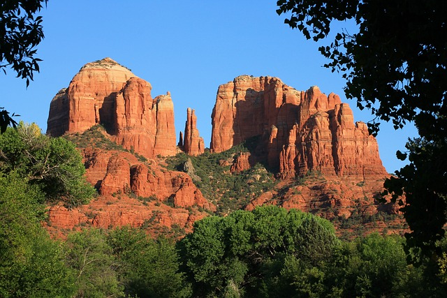We genieten van de prachtige woestijnlandschappen rond Phoenix/Scottsdale en bewonderen de gigantische saguaro-cactussen. We brengen een bezoek aan Montezuma Castle, een oude indiaanse rotswoning gebouwd door de Sinagua-stam. Daarna gaan we verder naar het pittoreske Sedona. Deze stad, gelegen in de weelderig beboste Oak Creek Canyon, is een paradijs voor wandelaars. De wandelingen rond Bell Rock en Devils Bridge zijn aanraders. Wie verfrissing zoekt, kan terecht in het Slide Rock State Park. Hier kunnen we zwemmen in de rivier, springen van de rode rotsen en glijden van natuurlijke glijbanen.
Dag 15 (21/09/2024): Sedona - Grand Canyon NP
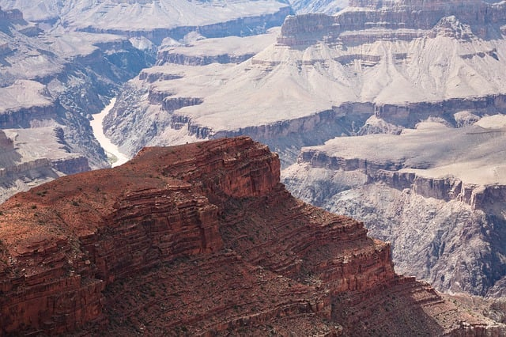We verlaten het pittoreske Sedona via de weelderige beboste Oak Creek Canyon en bekronen onze dag met een bezoek aan de Grand Canyon, een van de zeven natuurlijke wereldwonderen. We verkennen de verschillende wandelingen langs de South Rim en genieten van de magnifieke zonsondergang.
Dag 16 (22/09/2024): Grand Canyon NP - Page
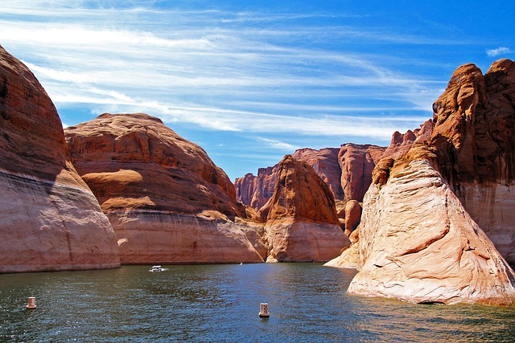Bij de Desert View Watchtower nemen we afscheid van de Grand Canyon en vervolgen onze trip naar Monument Valley. Nergens komt het Wilde Westen zo tot leven als in Monument Valley. De reusachtige zandsteenformaties lijken als bij wonder op te rijzen uit de vlakke woestijn. De Navajo geloven sterk in de magie van deze plek waar rood (rotsen), groen (grassen) en blauw (lucht) in perfecte harmonie voorkomen. Grijs asfalt hoort niet thuis in deze filosofie. De wegen in het Tribal Park zijn dan ook niet geasfalteerd. Na ons bezoek aan Monument Valley gaan we verder naar Page aan de oevers van Lake Powell.
Dag 17 (23/09/2024): Page
Vandaag hebben we een hele dag om te genieten van de natuur en de excursiemogelijkheden rondom Page. We laten ons imponeren door Horseshoe Bend, een spectaculaire meander van de Colorado, en brengen zeker een bezoek aan Antelope Canyon. Deze smalle kloof is wereldberoemd om zijn kleurrijke lichtinval. Upper Antelope Canyon, het bekendste deel van deze slot canyon, is zeer populair en enkel per jeep bereikbaar. Op voorhand boeken is dus noodzakelijk. Willen we de drukte vermijden, dan kiezen we voor de mysterieuze 'Secret Canyon'. Een andere optie vandaag is een rustige raft op de Colorado-rivier langs Horseshoe Bend of een kajaktocht op Lake Powell. Met de kajak glijden we in alle rust langs prachtige rotsformaties en smalle canyons en kunnen we een duik nemen in het verkoelende water vanaf een verlaten strand.
Dag 18 (24/09/2024): Page - Bryce Canyon NP
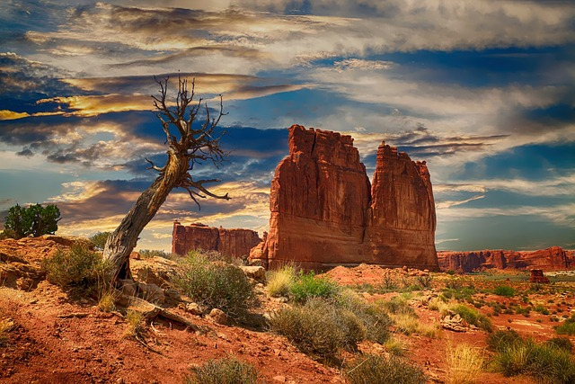We doorkruisen het Grand Staircase-Escalante National Monument op weg naar het gezellige westernstadje Kanab. Van hieruit is het nog 1,5 uur rijden tot Bryce Canyon. Dit intrigerende park is beroemd om zijn unieke geologische rotsformaties in allerlei kleurschakeringen, variërend van wit, pastelroze, vurig oranje en rood tot knalrood. We combineren de Navajo en Queens Garden trails en dalen af in een sprookjesachtige wereld.
Dag 19 (25/09/2024): Bryce Canyon NP - Zion NP
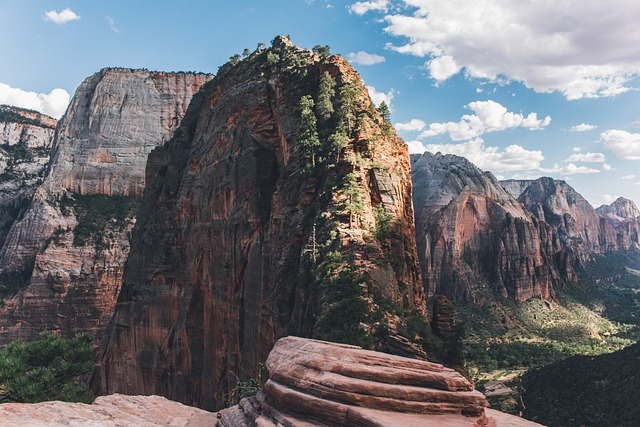Vandaag staan we weer versteld van de diversiteit tussen al deze verschillende nationale parken. We ruilen het fragiele Bryce Canyon National Park in voor het imposante Zion National Park, gekend om zijn massieve kliffen. Een spectaculaire route met enkele smalle tunnels brengt ons tot aan de Virgin River en het bezoekerscentrum van het park. Van hieruit nemen we de parkshuttle tot in het hart van de canyon. Met sacrale namen als The Watchman, The Altar of Sacrifice en The Great White Throne straalt Zion National Park iets goddelijks uit. Wandelaars vinden hier alleszins hun aards paradijs.
Dag 20 (26/09/2024): Zion NP
De populairste hikes in Zion zijn de klim naar Angels Landing en de tocht door de Virgin River tot aan de Narrows, het smalste deel van de canyon. Willen we off the beaten path wandelen in Zion, dan proberen we een wilderness permit voor The Subway te bemachtigen. Tijdens deze uitdagende dagtocht volgen we een klein riviertje tot in een smalle canyon die uitgesleten is zoals een metrotunnel.
Dag 21 (27/09/2024): Zion NP - Las Vegas
Voordat de rust van de natuur plaats maakt voor het wervelende Las Vegas, staat er nog een bijzonder park op het programma. Valley of Fire State Park heeft zijn naam niet gestolen. Het lijkt wel alsof we door een vuurhaard van oranje-rode rotsen rijden als we de panoramische route door dit park nemen. Ook de wandelingen naar Elephant Rock, Fire Wave en de White Domes zullen ons aangenaam verrassen. Als de avond valt, geven we ons over aan de magie van The Strip. Bijna elk hotel van de Strip is een attractie op zich: de fonteinen van de Bellagio, de gondels van de Venetian, de sfinx van de Luxor, de Eiffeltoren van de Paris en vergeet niet "What happens in Vegas, stays in Vegas".
Dag 22 (28/09/2024): Las Vegas
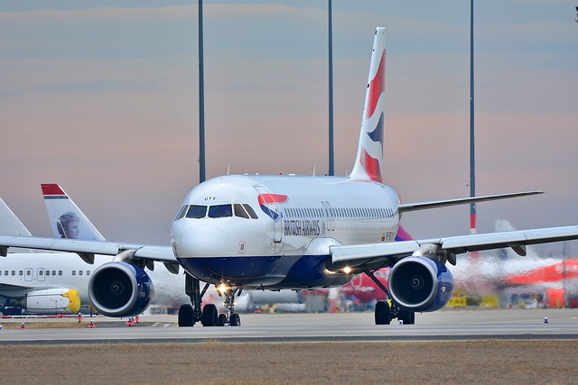In de loop van de dag gaan we naar de luchthaven, waar we afscheid nemen van onze prachtige reis. Dit is het einde van ons programma.